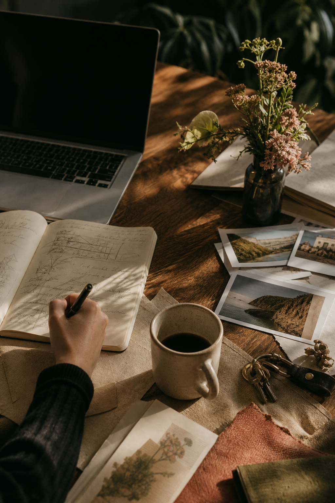
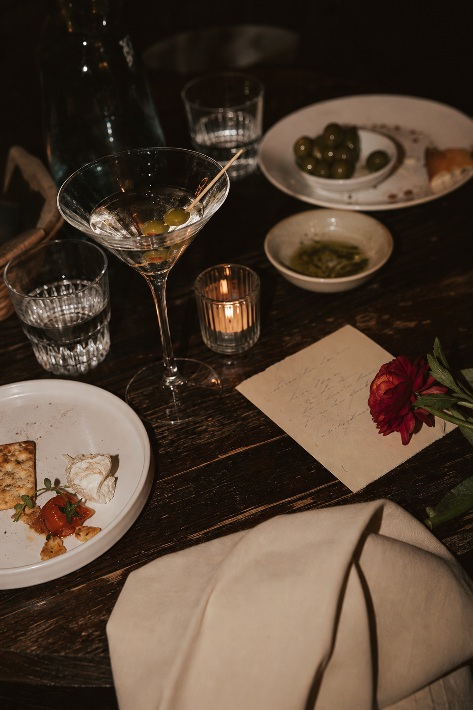
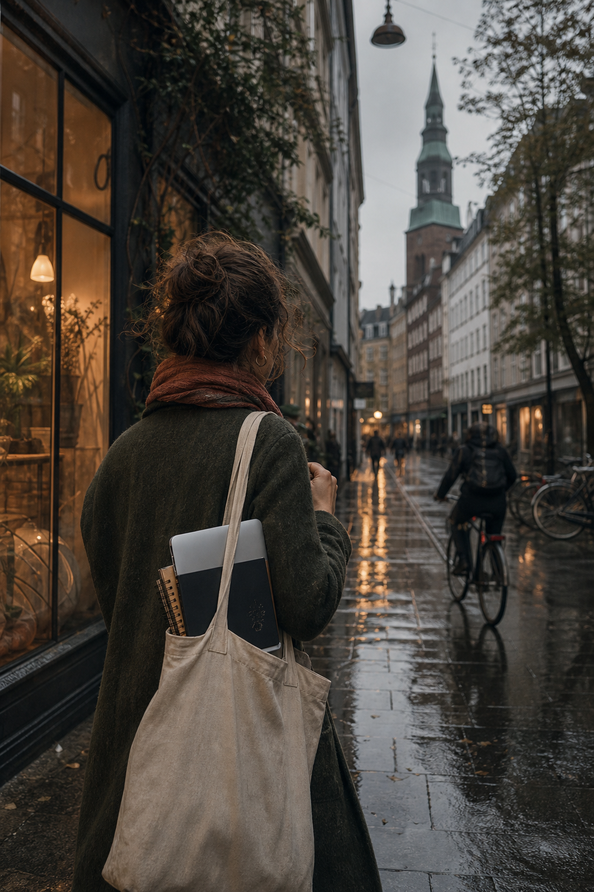
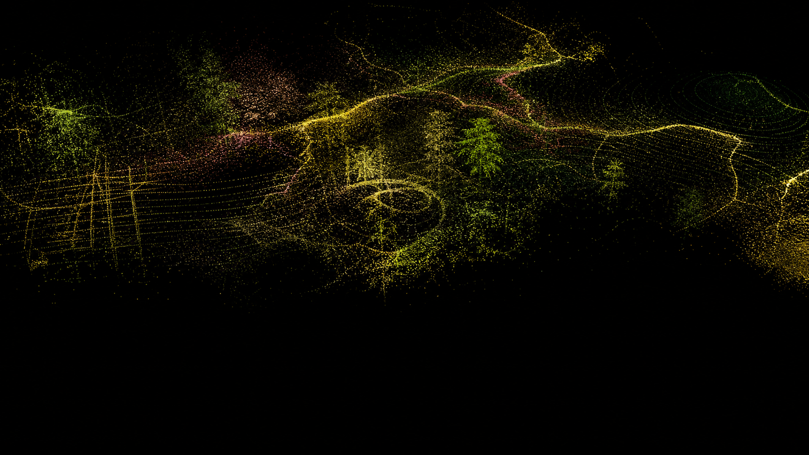

Field note 01 / design.md in the wild
Softly dramatic web taste.
01Photography carries the feeling.
02Serif romance, clean sans discipline.
03Sharp geometry, not soft app chrome.
04Personal, cinematic, still useful.
The visual appetite
Three ways the taste keeps showing up.
Your preferences do not read as one narrow style. They read as a repeated craving for texture, contrast, specificity, and a little bit of myth around ordinary work.
Type study
Big serif, quiet sans, one italic turn.
The page can be practical, but the typography should not feel like a default template woke up and chose beige.
Romantic, but controlled.
Display type gets to be emotional. Body copy stays readable and plain.


Life lately / project energy
Builder, traveler, taste collector.
The stronger lane for you is not pure personal blog and not pure consultant portfolio. It is more like a field journal for a builder with taste: client redesigns, automation systems, travel plans, visual experiments, and practical tools arranged with enough romance to make them feel worth returning to.
09
Projects that mix business utility with visual judgment.
33
Small discoveries, routes, and local notes that make travel usable.
05
Operating modes: Annie, Garry, Business Partner, and the systems behind them.

More than a moodboard
Look
around
around
The pattern is not simply pretty photos. It is contrast: practical structure beside cinematic evidence, serif softness beside hard rules, ordinary tools treated with the seriousness of a magazine spread.
How the system behaves
Four rules I would trust when designing for you.
/01
Start with a real image.
If the image is weak, the whole page starts pretending. Use place, face, hands, food, weather, or work.
/02
Let sections change temperature.
Full-bleed photo, dark essay panel, pale grid, olive proof band. Rhythm matters.
/03
Keep the furniture sharp.
Thin rules, square buttons, hard crops, no default rounded rectangles unless the brand demands them.
/04
Make utility feel specific.
Use dates, places, counts, routes, links, and real project names instead of generic section filler.
Preference check
Healthcare, travel, tools, portfolios. The same taste filter applies.
Default startup
Editorial working system
Feature cards everywhere
Varied sections with image scale and rhythm
Blue-purple gradient polish
Cream, black, olive, rose, amber, and acid-lime tension
Generic icons and vague benefits
Photos, places, counts, and practical specifics
Explaining the interface
Letting the layout explain itself
Personal lane
Think writer-builder field journal: cinematic images, short essays, project notes, and a feeling that the work belongs to a real life, not a content machine.
The details.
Typography
Elegant serif for feeling. Clean sans for clarity. Monospace only as metadata texture.
Layout
Editorial spreads, chapter changes, asymmetric crops, narrow copy blocks, and no nested cards.
Content
AI-OS, client redesigns, health and wellness brands, travel routes, experiments, and useful systems.
No more polite template energy.
Not quite a portfolio.
Not quite a diary.
Useful things can still feel expensive.
Current thesis
Personal, practical, alive.
The best website direction for you seems to be an editorial operating room: beautiful enough to want to enter, specific enough to trust, and structured enough that the work can actually get done.